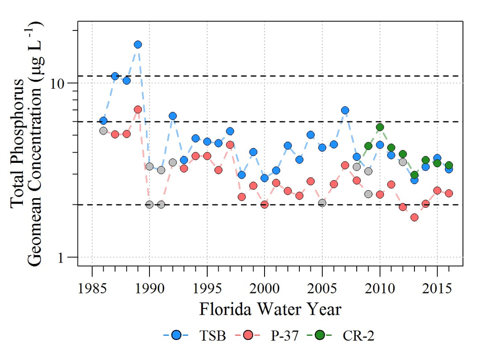

Originally this blog post was originally posted on Aquatic Thoughts….
As promised, the commentary and associated rebuttal. Both papers have been accepted by the journal and are considered in press.
Initial Commentary: Surratt D, Shindle D, Yongshan W, et al (In Press) Letter to the Editor Regarding: Julian P, 2017. Assessment of Upper Taylor Slough water quality and implications for ecosystem management in Everglades National Park, Wetlands Ecology and Management.
The initial commentary of Julian (2017) had five main points:
Julian (2017) evaluates water quality within TS using a 10 \(\mu g/L\) water quality criterion rather than the anti-degradation standard referenced in United States v. SFWMD et al. (1988); Case No. 88-1886-CIV-MORENO. More specifically the 6 \(\mu g/L\) TP flow-weighted mean target concentration.
Surratt et al (In Press) indicated that even the 6 \(\mu g/L\) is too high as background concentrations are near 2 \(\mu g/L\) (based on water quality data downstream at a station identified as P-37).
Surratt et al (In Press) argues that Julian (2017) analysis indicating that Upper TS is resilient and has yet to reach it assimilative capacity and that the presence of cattail stands is not a clear indicator of marsh eutrophication.
Surratt et al (In Press) generally disagrees with the proposed natural enrichment processes of in-situ P recycling driven by micro-topography, geology and hydrology.
Surratt et al (In Press) concludes the commentary by indicating that diffusive water delivery rather than direct discharge is less damaging the ecology of the ecosystem.
Rebuttal: Julian P (In Press) Letter to editor regarding Surratt D, Shindle D, Yongshan W, et al. Letter to the Editor Regarding: Julian P, 2017. Assessment of Upper Taylor Slough water quality and implications for ecosystem management in Everglades National Park. Wetlands Ecology and Management.
The rebuttal attempts to address Surratt et al (In Press) major points with some additional information for clarification. Each counter point below corresponds to issues addressed above. More specific information regarding these items can be found in the published manuscript.
Julian (2017) did not assess the water quality within UTS against the 10 \(\mu g/L\) metric. Instead, the author used the number simply as a point of reference for oligotrophic wetlands (as stated in the beginning of the introduction). The reference to the 6 \(\mu g/L\) TP flow-weighted mean target is just that a target. In water quality standard parlance, Achievement of a concentration limit should result in attainment of a long-term target concentration, therefore limits and targets are not one in the same.
The monitoring station P-37 is located in the lower TS area, approximately 15 km south of TSB, therefore using P-37 as a comparison to the UTS region is tenuous. Furthermore, evaluation of annual geometric mean TP concentration at P-37 yielded very few annual geometric mean concentrations at or below 2 \(\mu g/L\), therefore considering this concentration representative of background is not supportable quantitatively. Moreover, in recent years, water quality of a station located approximately 10 km upstream of TSB experienced concentrations consistent with those observed at TSB. Attributing background concentrations based on less than 10% of the data below 2 \(\mu g/L\), located several kilometers from the area of interest and located in a completely different region with different forcing factors is not an appropriate estimation of background concentration rather characterization of ambient conditions of that particular region.

Figures not included in the original paper.
Julian (2017) evaluation of resilience was determined by the lack of an inflection point in the concentrations-loading curve (inflow load vs outflow concentration). Through this analysis Julian (2017) revealed that the loading rate increased during the direct discharge (as expected) but the outflow concentration significantly decreased (very unexpected) with no apparent change point or S-shaped curve as seen in other systems (i.e. Treatment Wetlands).
As stated by Julian (2017), surface water quality alone cannot reconcile the widespread assertions of TP enrichment of TS. The interpretation of eutrophication metrics remains a fundamental question in this unique environment. Fine resolution, spatially explicit soil sampling has detected “pockets” of enriched soil nutrients within upper TS suggesting a natural enrichment and accumulation mechanism facilitating heterogenous nutrient storage and the occurrence of cattails in a stressed environment.
This point was never refuted in Julian (2017) and a point that I strongly agree with Surratt et al (In Press). However with that in mind, future hydrological restoration of the ecosystem must take into account what has been learned.
The rebuttal is concluded with: “Current TS water quality conditions are no longer responsive to the eutrophic paradigm as TSB reaches an annual geometric mean of approximately 3 \(\mu g/L\). Therefore, other metrics must be considered and assessments are needed to investigate TS’s sensitivity to changes in water quality, water management, ecosystem management and vegetation dynamics to further understand the sloughs internal processes and better protect its ecology.”
References
Julian P (In Press) Letter to Editor Regarding Surratt D, Shindle D, Yongshan W, et al. Letter to the Editor Regarding: Julian P, 2017. Assessment of Upper Taylor Slough water quality and implications for ecosystem management in Everglades National Park. Wetl. Ecol. Manag.
Julian P (2017) Assessment of Upper Taylor Slough water quality and implications for ecosystem management in Everglades National Park. Wetl. Ecol. Manag. 25:191–209.
Surratt D, Shindle D, Yongshan W, et al (In Press) Letter to the Editor Regarding: Julian P, 2016. Assessment of Upper Taylor Slough water quality and implications for ecosystem management in Everglades National Park, Wetlands Ecology and Management. Wetl. Ecol. Manag.